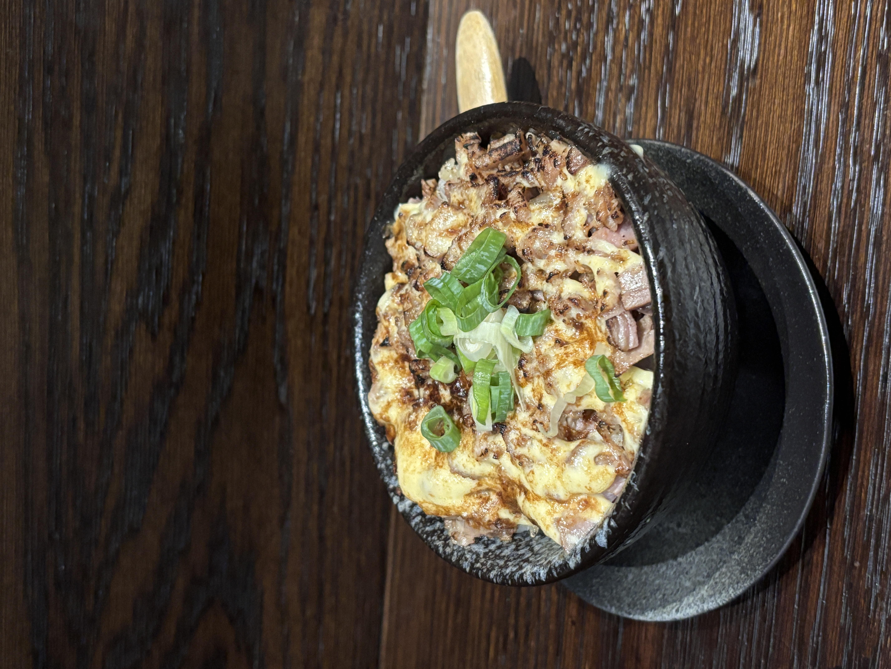
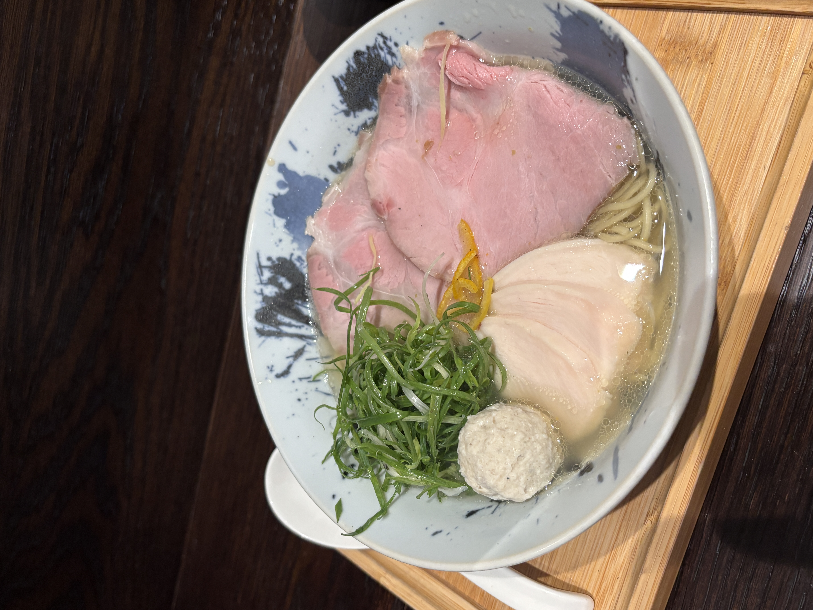

在拉麵的台大公館，我覺得這家拉麵的實力被大大低估！必須要來跟大家介紹這間隱藏在公館夜市附近的「道楽製麵所」！
道楽製麵所不只店面外觀很日式，店內佈置也是滿滿的日式老麵店感，大概一次可以容納約20人左右。先在外面的點餐機點餐完後，店員會再帶你入坐。可以自己去裝冰水和冰綠茶（很讚，因為大部分拉麵店家都只有提供冰水）。

跟朋友二訪的時候，點了柚子鹽味拉麵、海老雞白湯拉麵和叉燒飯。
先小小帶一下叉燒飯的部分，雖然只是小小一碗的開胃菜（我都當開胃菜好哈哈哈）但是店家處理的完全不馬乎，第一口吃下去就是滿滿的炙燒香氣，接著最厲害的是每一顆米粒都有沾到醬汁，不會上面的飯太鹹，下面的飯沒沾到醬汁沒味道，我覺得是我吃過的眾多拉麵店當中，排名前三名的叉燒飯。
終於進到拉麵啦～我當天是吃柚子鹽味拉麵，湯頭的柚子味很濃，但是不會蓋過所有的味道，而且鹹度很柔和，適合喜歡吃清淡系的人，配料的部分有兩片很大片的豬肉、三片舒肥雞、一顆丸子（蠻特別，海老雞白湯拉麵則是配餛飩）和超級嫩的溏心蛋。我有偷喝了朋友的海老雞白湯拉麵的湯，湯頭有很濃郁的蝦味，但是整體來說也是偏柔和的味道，吃到一半不會覺得很膩，甚至可以把湯喝完。
*網路上有人提到店家有免費提供特製豚骨咖哩，但是我目前去吃的時候都沒有遇到，可能因為都是晚上去，所以被吃完了，下次有機會中午去吃吃看！
*可以免費加麵或飯，對於食量大的人來說，真的是很幸福呀（就是我><）
